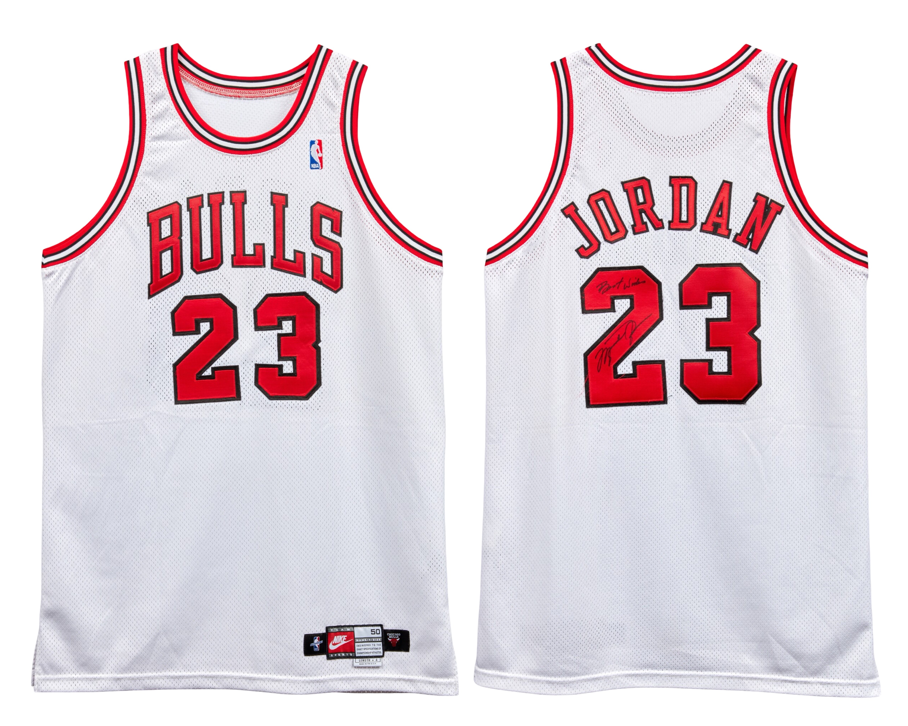

Jersey A
Season
1997–98
Style
Home (White)
Use
Regular Season
Confirmed Matches
2
Known wear: Feb 28, 1998 · Mar 3, 1998
Last Updated: February 24, 2026
Public Sale Summary
| Auction House | Sotheby’s |
| Sale Date | April 11, 2023 |
| Lot | 6 |
| Sale Price | $508,000 |
Archival Designation System
Each jersey is assigned a permanent archival designation (A, B, C, etc.). These identifiers represent distinct documented physical garments and remain fixed across preseason, regular season, postseason, and year transitions. The designation tracks the garment itself rather than a specific season or chronological sequence.
1997–98 Home Jersey — Regular Season
POP 1

1997–98 / Jersey A
Publicly documented example
1997–98 Chicago Bulls home jersey worn during regular season play. Documented wear includes February 28, 1998 and March 3, 1998.
Public Sale Details
- Auction House: Sotheby’s
- Sale Date: April 11, 2023
- Lot #: 6
- Sale Price: $508,000.00
- Photo-Matched: Yes
- Games Photo-Matched: 2
- Photo-Matched By: MeiGray
- Authentication / LOA: Yes
Research & Provenance
The jersey is accompanied by a letter from the Chicago Bulls referencing its original sale through the team's charitable foundation. The documentation further notes the presence of Jordan's signature and “Best wishes” inscription.